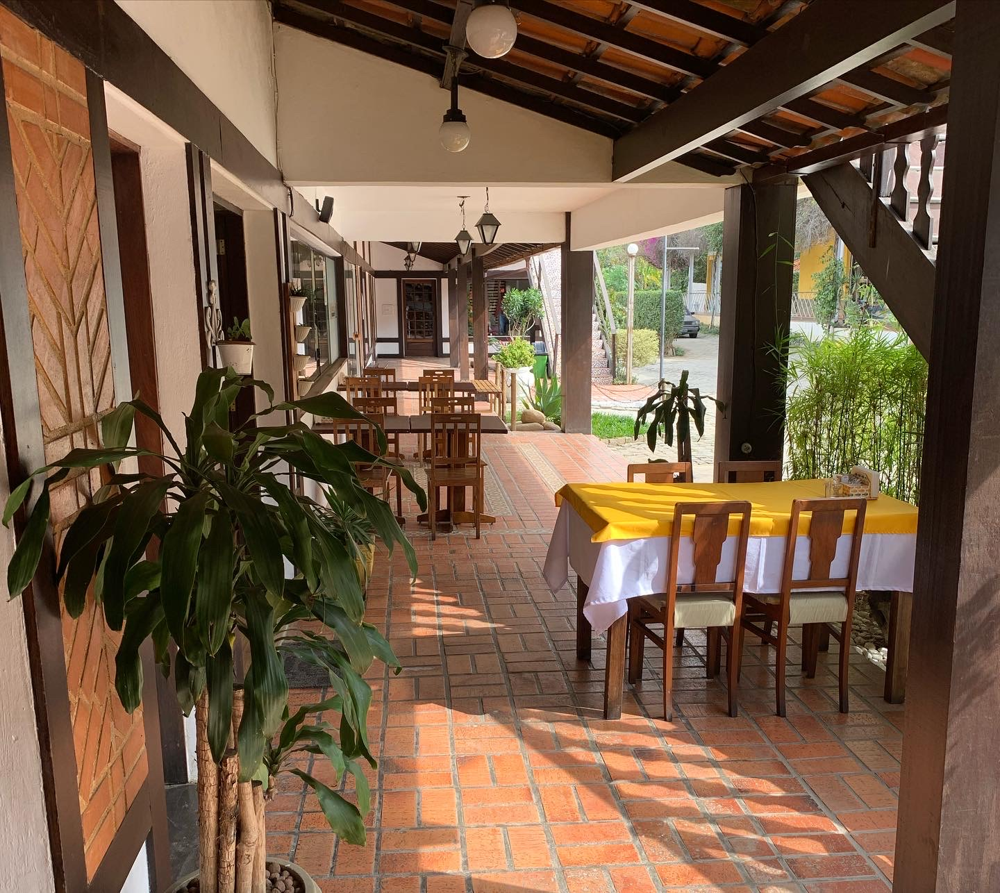
Mauricio’s
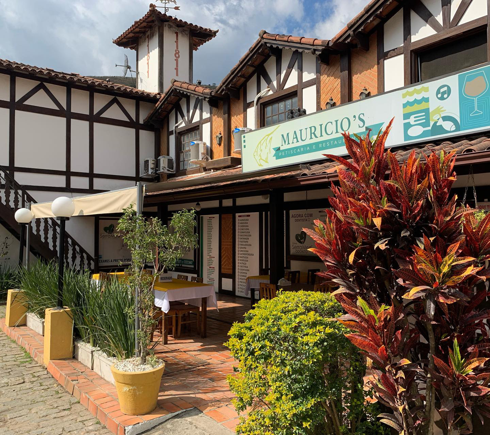
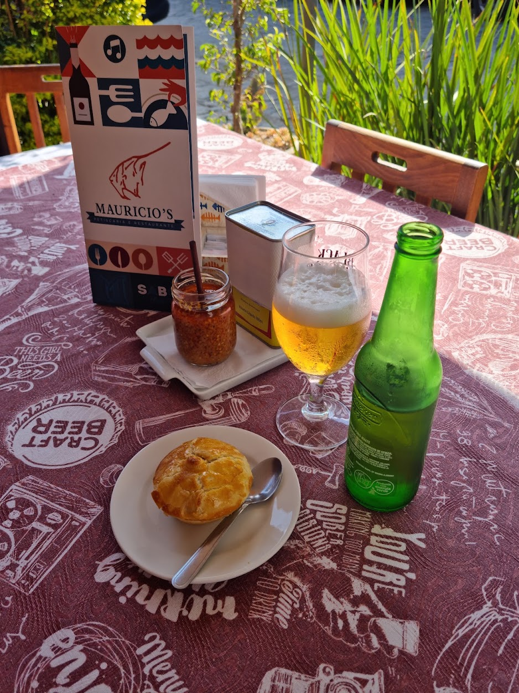
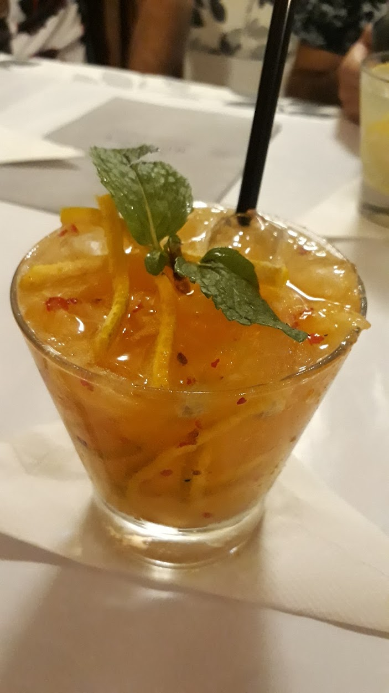
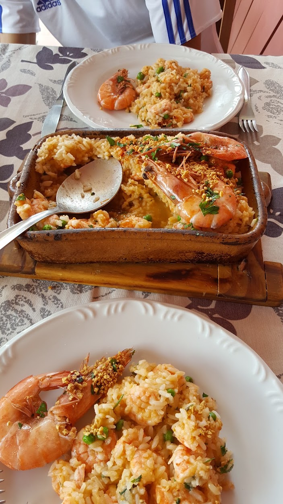
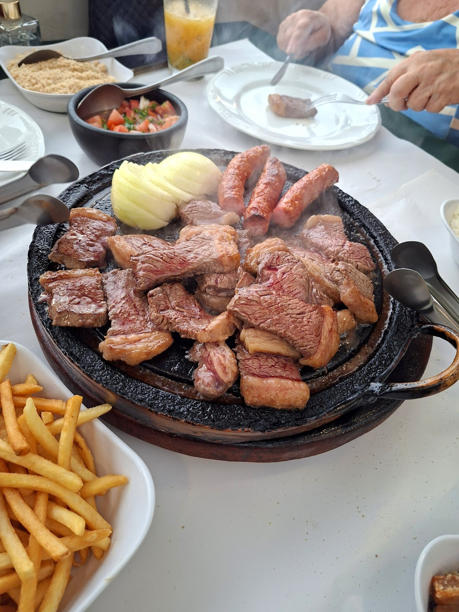
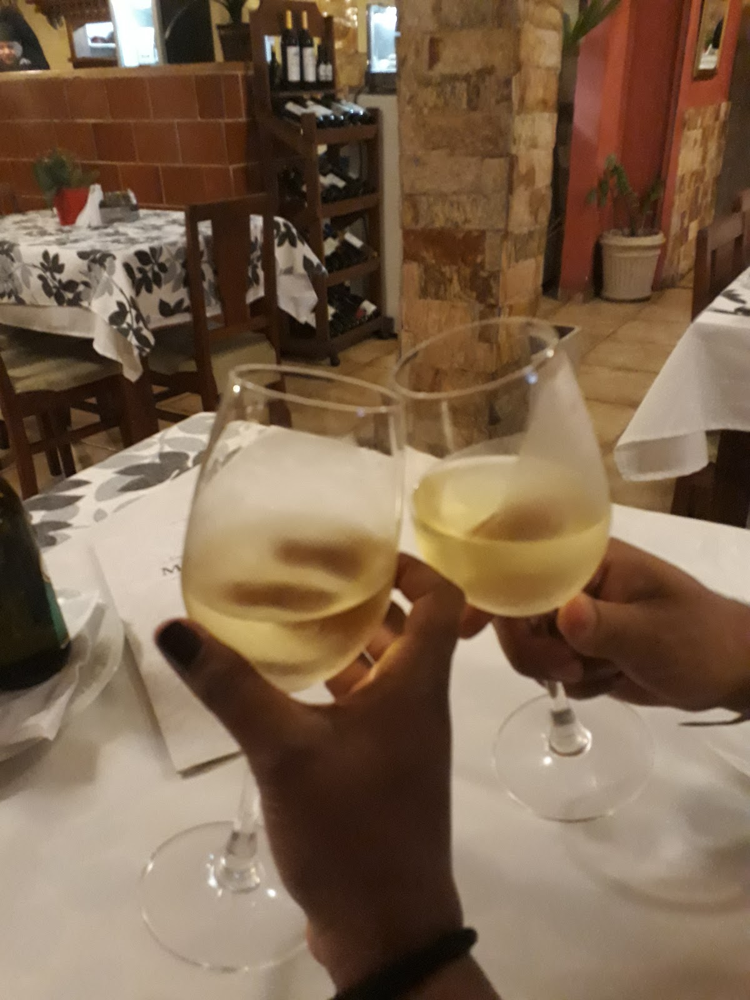
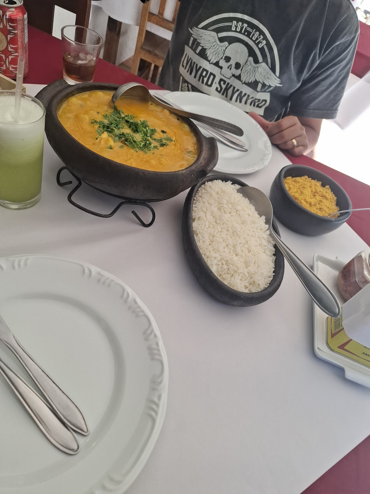
A casa
Da serra,
Da serra,
uma mesa de mar.
Em Itaipava, há mais de 60 anos servindo bobó na panela e carne na pedra.
60+
anos de tradição em Itaipava
4,7 / 5
390 avaliações no Google
Shopping Altair
Estacionamento gratuito e acessibilidade
Cozinha do Mauricio’s
Assinaturas da casa
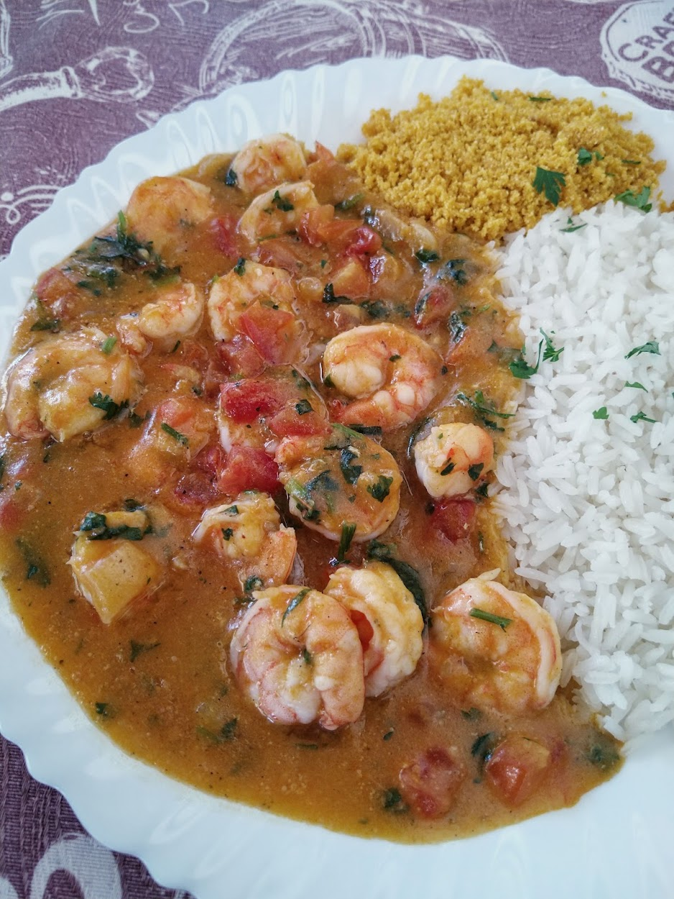
Clássicos de camarão
Chiclete, moqueca e bobó são os destaques de camarão da casa.
Chapas quentes & executivo
Picanha na pedra, filé à piamontese e opções para o almoço.
Avaliações no Google
4,7 / 5
390 avaliações
O que chega à mesa
O bobó e o chiclete de camarão aparecem nas avaliações, junto aos pratos fartos e quentes e ao ambiente tranquilo.
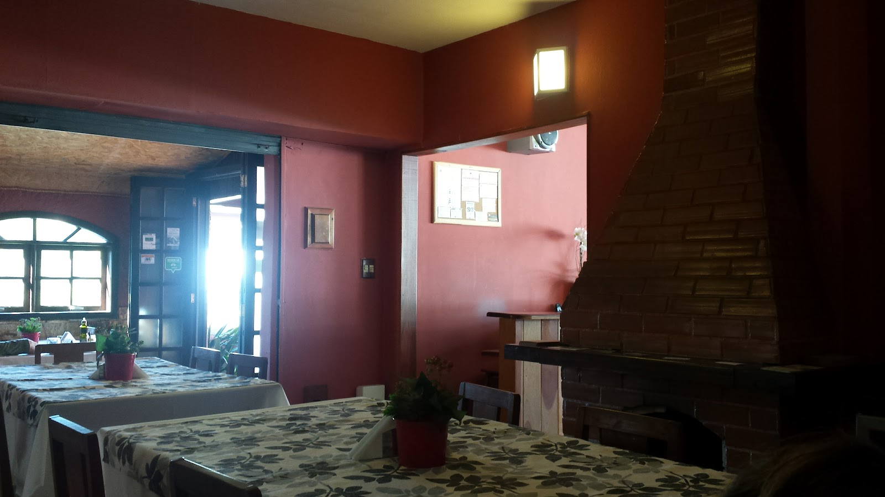
Experiência na serra
Varanda de dia.
Varanda de dia.
Lareira no frio.
Há mesas ao ar livre para os dias claros e um salão com lareira para o inverno. Do bar vêm caipirinhas, batidas e vinhos.
Para quem vem com crianças, a casa tem cadeirinhas e cardápio infantil.
Visite-nos
Itaipava, Petrópolis – RJ · CEP 25750-225
À mesa em Itaipava
Shopping Altair · Andar G
Estr. União e Indústria, 11811 · Lojas 5/6Itaipava, Petrópolis – RJ · CEP 25750-225
- Segunda a quarta
- 11h–18h
- Quinta e sexta
- 11h–22h
- Sábado e domingo
- 11h–19h
Horários do Google Maps (nov/2026). Confirme feriados com a casa.
Momentos da casa
Convites à mesa
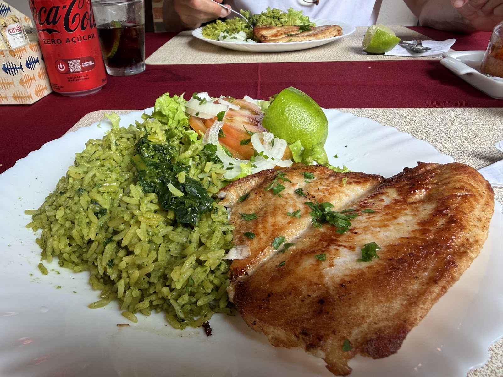
Almoço executivo
De segunda a quarta, consulte o prato executivo do dia.
Lareira e vinhos
Nas noites de quinta e sexta, a lareira faz companhia à mesa.
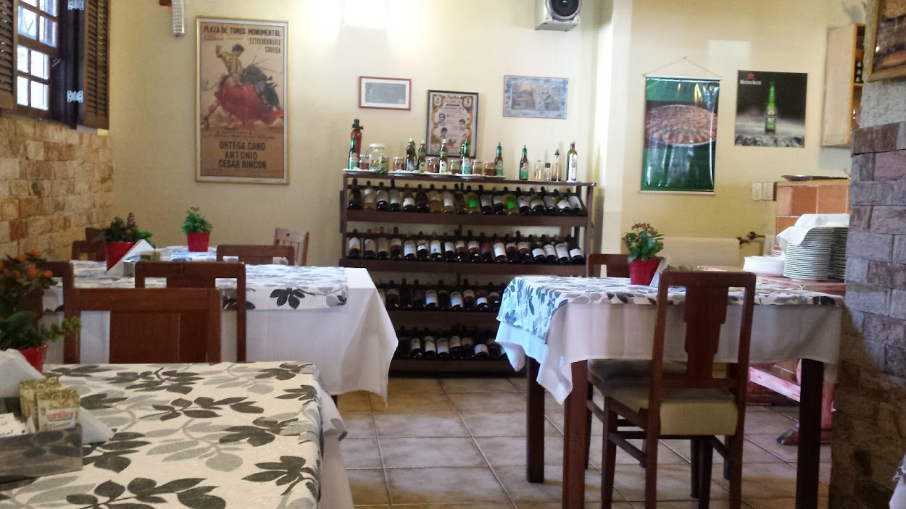
Encontros em família
Reserve com a casa para reunir o grupo no Shopping Altair.
Escolha os pratos no cardápio e revise o resumo. A casa confirma disponibilidade, taxa e horário pelo WhatsApp (24) 99306-1488.
Sim. Consulte a casa pelo WhatsApp para grupos, fins de semana ou jantares de quinta e sexta.
O Shopping Altair oferece estacionamento gratuito. A ficha do restaurante informa entrada, mesas, banheiro e vagas acessíveis.
A ficha informa crédito, débito, aproximação, Alelo, Pluxee e vale-refeição. Confirme seu benefício ao pedir.
Sim. Há chapas quentes, filés, opções executivas e cardápio infantil. O bar serve batidas e outras bebidas.